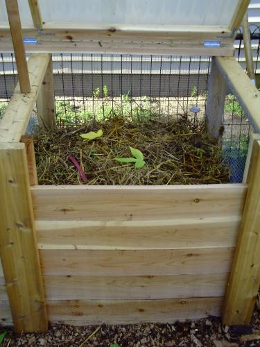
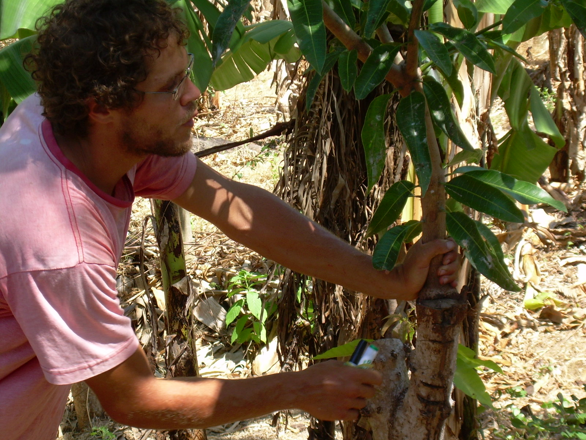
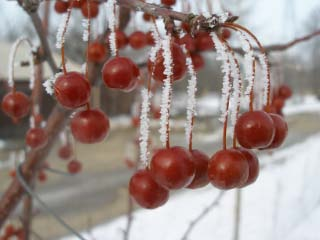

Navigation

User login
Field Glossary

English-Spanish Dictionary for Sustainable Agriculture
Permaculture
Compost 101 at Moreno Farms, Minneapolis
Reed Aubin of Understory held a "how to compost" class 8-12-2010 at Moreno Farms, Minneapolis. We were unable to provide complete information at the workshop, so we will followup here with some additional tips and tidbits.
After the workshop was rained out, Reed recorded a 16-minute video about How to Build a Hot Compost Pile.
Ethical Design Methodology Merging Science and Traditional Approaches
Permaculture is an ethical design system for creating sustainable human settlements. In this section we have compiled a few resources on the subject, organized by region, by print material, by general web links, and more.
CHRIS SHANKS TO TALK IN MINNEAPOLIS OCTOBER 13
Posted October 3rd, 2009 by Reed Ellis AubinAgro-forestry and Permaculture in Central America
Lessons, examples, patterns...how could this apply here in the Midwest?
A presentation and discussion with Chris Shanks, Co-Director of Project Bona Fide in Ometepe, Nicaragua.
INTRODUCTION TO PERMACULTURE WORKSHOP
Posted February 9th, 2009 by Reed Ellis Aubin
GET READY TO GET SERIOUS with ecological thinking and doing
Permaculture Research Institute Cold Climate presents:
An Introduction to Permaculture and Homesteading at Any Scale
- Catching and Storing Energy
- Annual and Forest Garden Design
- Water and Irrigation Systems
- Solar and Geothermal Heating Systems
FEATURED PARTNER
Permaculture Research Institute - Cold Climate
Understory is proud to partner with PRI - Cold Climate as the Upper Midwest's permaculture organization moves toward nonprofit status. A growing organization with a variety of educational programs and events.
For more information, check out the newly redesigned PRI website.
PERMACULTURA EN ESPAÑOL
Authoritative Texts & Translations: Well-grounded Spanish to Talk About Permaculture & Agroforestry
- http://attra.ncat.org/espanol/agroforesteria.html
- http://www.tierramor.org/permacultura/permacultura.htm
Perfection
Posted November 14th, 2007 by Reed Ellis AubinYou may have heard this from Masanobu Fukuoka, the visionary Japanese farmer:
"The purpose of agriculture is not the production of food, but the perfection of human beings"
The trajectory of many martial arts and meditative traditions culminates in a settled, food-producing country life. The lifelong study of balance in physical and mental action can be seen as also a training ground for providing for one's needs in old age, sans Medicare, nursing homes, or intact family structures.